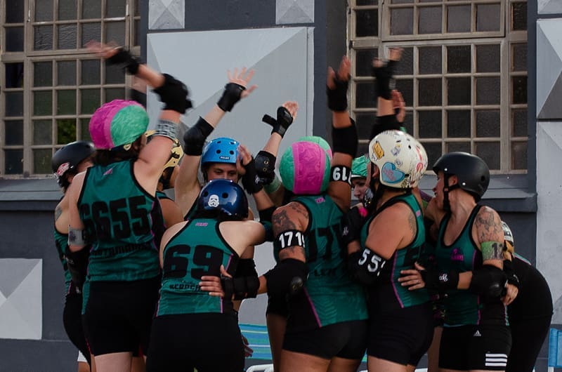

|  |
Ayer participamos en la apertura de la semana de la mujer trabajadora, organizado por el
Ministerio de las Mujeres, Géneros y Diversidad de la Nación y el Ministerio de Cultura de la
Nación en Tecnópolis Argentina.
Estamos super felices de poder haber sido parte del hermoso evento, de lo que se promueve
bajo el lema #NosotrasMovemosElMundo y en especial agradecemos el interés en difundir el
deporte que hacemos con tantas ganas y esfuerzo.
Agradecemos también a Wonderclan Roller Derby Zona Norte por jugar un hermoso partido y
como siempre a les oficiales que sin elles no podría haber sido posible.
Les invitamos a seguir con la conmemoración de la semana de la mujer del 4 al 7 de marzo en
Centro Cultural Kirchner |